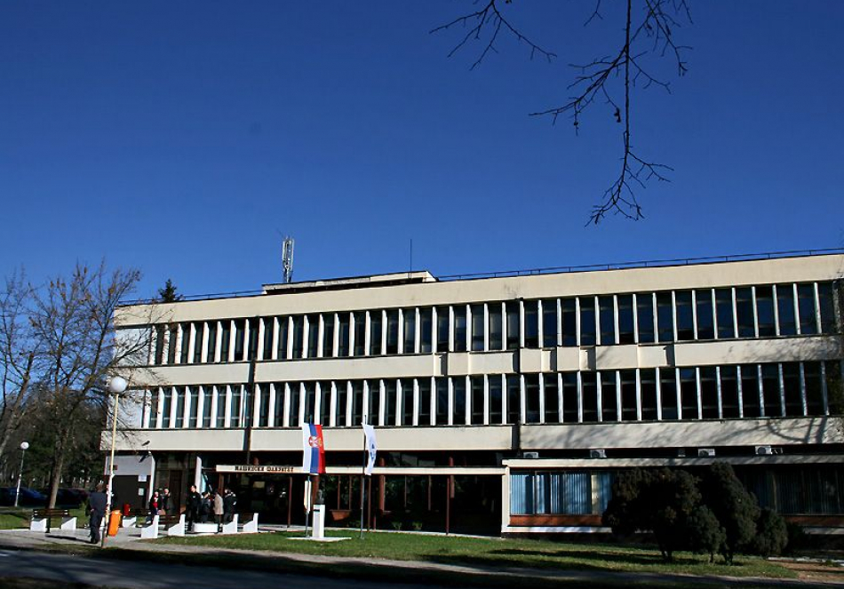
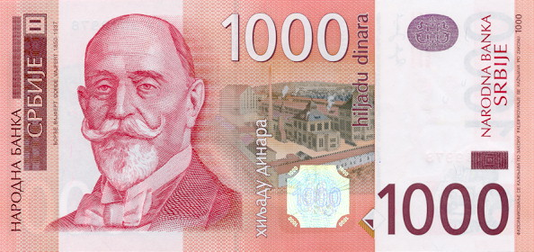

О нама
Радио Финк је бесплатан научни радио основан 2020. .Настао је као покушај унапређења високог школства и константног стручног усавшавања. Научни talk-show,podcast-и, емисије о научним достигнућима саставни су једног дана на ФИНК радију.
Основне информације
Контакт
Број телефона:034233-233
Пишите: radiofink@finkg.rs
Запослени
М.Вујсић
Историјат
Стартап покренут: 2020. јануар
Loading...
Донирајте уколико сте у могућности
Сваки вид ваше подршке значи.

Динарски
Жиро рачун:234-3232-3233
Paypal:
fink.kg@paypal